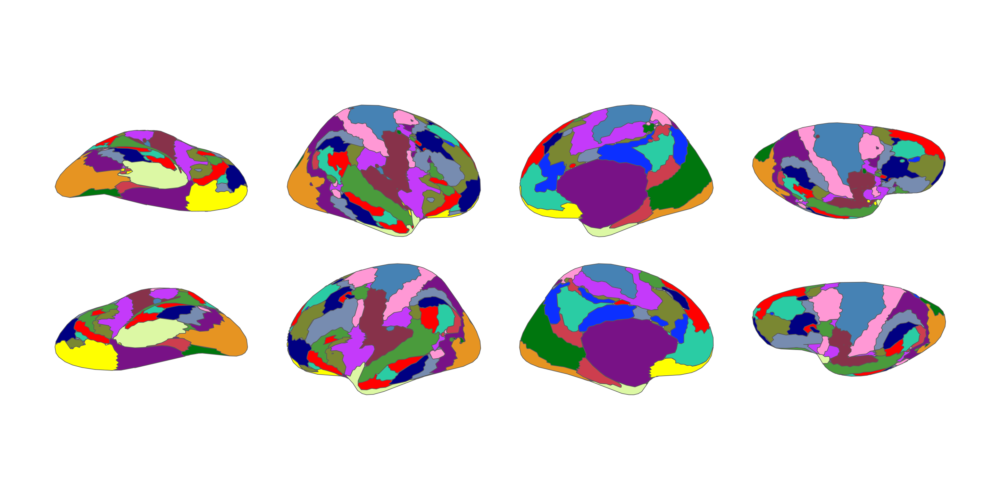
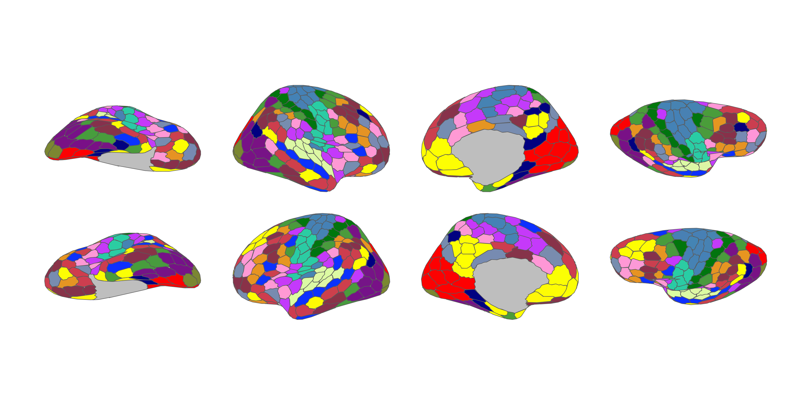

Kong cortical parcellation atlases for the ggseg ecosystem. Includes the Kong 2019 individual-specific parcellation and Kong 2022 multi-resolution parcellations (100-1000 parcels).
Installation
We recommend installing the ggseg-atlases through the ggseg r-universe:
options(repos = c(
ggseg = "https://ggseg.r-universe.dev",
CRAN = "https://cloud.r-project.org"
))
install.packages("ggsegKong")You can install this package from GitHub with:
# install.packages("pak")
pak::pak("ggsegverse/ggsegKong")Kong 2019
library(ggseg)
library(ggsegKong)
library(ggplot2)
ggplot() +
geom_brain(
atlas = kong2019(),
mapping = aes(fill = label),
position = position_brain(hemi ~ view),
show.legend = FALSE
) +
scale_fill_manual(values = kong2019()$palette, na.value = "grey") +
theme_void()
Kong 2022 (400 parcels)
ggplot() +
geom_brain(
atlas = kong2022_400(),
mapping = aes(fill = label),
position = position_brain(hemi ~ view),
show.legend = FALSE
) +
scale_fill_manual(values = kong2022_400()$palette, na.value = "grey") +
theme_void()
Data source
Kong R, Li J, Orban C, Sabuncu MR, Liu H, Schaefer A, Sun N, Zuo XN, Holmes AJ, Eickhoff SB, & Yeo BTT (2019). Spatial topography of individual- specific cortical networks predicts human cognition, personality, and emotion. Cerebral Cortex, 29(6), 2533-2551.
Kong R, Yang Q, Gordon E, et al. (2022). Individual-specific areal-level parcellations improve functional connectivity prediction of behavior. Cerebral Cortex, 31(10), 4477-4500.